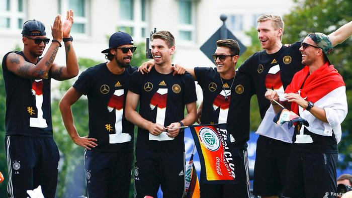

The motivation of the project comes from recent growing racism inside the German football world. As the co-leader of the right-wing to far-right political party Alternative for Germany (AfD), Gauland once said: “People find [Boateng] good as a footballer, but they don’t want to have him as a neighbor.” (Frankfurter Allgemeine Zeitung) The largest public news channel in Germany, Tageschau, also reported this news. Later Gauland mentioned that he realized using Boateng as an example was inapproriate because Boateng is a Christian.
Born, raised and trained in Berlin, Boateng performed remarkably in the field of professional sports. He was targeted and insulted by Gauland simply because of his appearance and heritage. Statements such as these are a clear sign of racism and prejudice. There are hundreds of players like Boateng being judged by their appearance rather than by their performance. The growing movement of far-right extremists tend to argue that the “German football team is no longer ‘German’ anymore.” However, if we look at the recently world cup winning squad, players from various heritage backgrounds played a significant role in the national team.
The intention of this project is to show that since the German reunification, the national football team has become a more multicultural group. Additionally, this group has shown a high level of performance on the World Cup stage. This research will ideally address and challenge the notion of an “un-German” national team, as multicultural identity has long been and will continue to be part of the team by mapping out players’ heritage and their personal stories. The other goal of this project is to present football in both national and regional level. As part of my doctoral dissertation where I intensively work with football and identity, this project will serve as the foundation function of presenting historical facts.
Home page provides a description of this project and the author. In the “national” page, user could view the history of the German national team from 1990 to 2018 through timeline. Squad from each world cup has one separate page to show their performance during the game as well as where they were born. For certain players, such as Boateng and Özil, there will be separate pages to depict their personal narratives.

As a second-year PhD student in the German Studies Program at Michigan State University (MSU), my research interests include critical theory, digital humanities, and sports studies. My research focuses primarily on the ways in which the sociological phenomenon of football influences national identity in Germany. Using football as a medium, my dissertation explores how the rhetoric of multiculturalism shapes an image of unified national identity despite the existence of discriminatory reactions to players of color from the public. The goal of my research project is to use computational text analysis not only to examine and reveal how the idea of multiculturalism is depicted and inserted in the mass-media discourse of football, but also to analyze the complex negotiation of German identity in a globalized context over thirty years after reunification.As much of the data relating to the German national football team reside in the haystack of social media (e.g. Twitter and Facebook) and mass media (e.g. Der Spiegel, Frankfurter Allgemeine Zeitung, and the Süddeutsche Zeitung, etc.), I plan to build a corpus to mine specific linguistic patterns that relate to my primary research questions of how football helps construct, represent, and reflect national identity. This website is a starting point for me to work on.
One thing I like about myself is I have no issue accepting my lack of knowledge in genral and I am willing to learn. Please let me know if you have any suggestions about this project, I am happy to talk to you! You could reach me at koutiany@msu.edu.